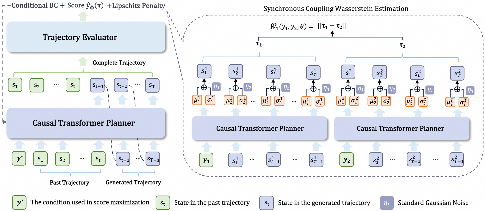

01研究背景与问题定义
生成式自动出价把整段投放期的状态轨迹作为计划，再由控制器转换为出价。仅用高收益标签条件化历史轨迹，可以学会复现已有行为，却不能保证生成的“更高目标”计划真的具有更高价值：离线数据以外的轨迹没有真实投放反馈，生成器也可能在看似高收益的区域产生异常预算曲线。
AIGB-Pearl 把完整生成轨迹变成一次策略动作，先学习一个固定轨迹评价器，再让扩散规划器优化它给出的分数，同时保留对离线数据的拟合约束。核心变化是从条件模仿历史计划转向受可信度限制的离线计划改进。LLM 在其中编码广告主文本特征，并不直接通过自然语言决定每次广告竞价。
| 问题 | 为什么常规补救留下风险 | 论文的干预 |
|---|---|---|
| 生成轨迹没有可观测奖励 | 不实际部署就无法知道真实 GMV，单靠目标标签可能外推失真。 | 用有标签轨迹训练整段评价器。 |
| 值函数和策略相互追逐不稳定 | 自举目标误差会随迭代放大。 | 固定监督评价器，将整段计划建模为一步决策。 |
| 规划器可能利用评价器漏洞 | 更高预测分数未必对应更好预算分配。 | 专家折扣与离线似然约束同时限制搜索。 |
这不是消除分布外风险的证明。方法把风险转化为两个可控设计问题：评价器在什么轨迹上可靠，规划器允许偏离既有行为多远。
02方法与技术路线
训练先建立轨迹评分，再冻结评分网络优化规划器；部署沿用既有逆动力学控制器。这样可以将计划改进与动作转换分开考察。
离线轨迹与广告主文本
状态序列、真实价值；产品标题、类别和评价经 LLM 表示。
专家反馈
集中消耗、预算前后倾斜、低消耗及广告主事后不满，形成坏轨迹标签。
扩散规划器
生成整段状态轨迹；提高评价器分数，同时继续拟合离线条件分布。
部署控制器 · 固定
通过逆动力学模型将计划转换为实际出价；不参与本次规划器创新。
评价器：为什么同时需要绝对值和排序
原始评价器读取完整状态序列，用末端表示预测轨迹真实价值；广告主的文本描述经预训练 LLM 编码后融入模型，使相同状态曲线可以在不同业务语义下解释。训练既拟合 GMV 的数值，也学习哪条轨迹更好。
仅排序可以把高低次序学对，却不约束分数尺度；只做点值回归又可能忽视相近轨迹的相对优劣。规划器会直接优化分数，因此两类误差都影响搜索方向。LLM 特征增强了表达能力，但并不把评价器变成拥有真实市场反事实的模拟器。
专家折扣：让高预测收益承担行为可信度约束
最终评分是“原始收益预测 × 非坏轨迹概率”。专家判据将预算过度集中、过早或过晚消耗、消费不足和广告主事后不满标为负例；分类模型将这些标签转成连续折扣。它不是每次部署时人工审批，而是训练时将领域知识编入可泛化的风险评分。
乘法意味着看似高收益、但被认为异常的计划会被压低。代价是专家对“坏”的定义也成为可行策略的隐含边界：一种过去罕见但合理的新预算形状，可能被折扣阻挡。因此专家模型缓解预测漏洞，却不能保证所有低分轨迹都无价值。
一步轨迹优化：避免自举，同时保留离线锚点
扩散规划器在固定高目标条件下生成完整计划，评价器直接给它一个终端分数。优化梯度经过去噪生成过程作用于规划器；因为没有反复估计下一步 Q 值，也不让评价器随策略交替追逐，方法避开了相应训练不稳定来源。
但直接最大化分数仍可能把生成器推离评价器熟悉区域，所以目标还包括离线条件似然项：一边改善高目标计划，一边保留在真实轨迹上已经学到的分布。高目标设在离线已见价值之上，用来表达改进方向；真实可得收益仍须由模拟或线上投放验证。
论文原始结构图 · 点击对照

03实验设计与结果分析
真实投放的收益是否只是多花广告费
淘宝 19 天 A/B，整体涉及约 6,000 广告主；选取同控制器的 DiffBid 对照。这里 Cost 是广告消耗，不是模型 API 成本。
| 方法 | GMV | ROI | 广告消耗 |
|---|---|---|---|
| DiffBid | 76,390,174 | 5.31 | 14,395,290 |
| AIGB-Pearl | 78,676,009 | 5.41 | 14,551,054 |
| 相对变化 | +3.00% | +1.89% | +1.10% |
GMV 提高同时广告费略增，但 ROI 也改善，所以收益不能完全由追加消耗解释。控制器一致使改进更能归于规划侧，不过规划侧同时改变评价建模和优化目标，不能再细分为某一组件的独立效果。
对离线未见广告主，另一个 4,000 广告主、19 天测试相对 DiffBid 报告 GMV +3.32%、ROI +2.48%、广告消耗 +0.72%。这支持跨广告主迁移，尚不等同于跨平台或市场机制变化下的稳定性。
评价器和专家折扣是否提供了有用约束
评价器消融比较原始评分的数值与排序精度；专家消融为真实投放对照。
| 对照 | 主要观察 | 为何影响规划 |
|---|---|---|
| 有 LLM，点值训练 → 点值+成对 | SMAPE 38.20% → 31.60%；AUC 65.00% → 75.10% | 更接近真实值，也更会排序。 |
| 去掉专家折扣 → 完整评分 | GMV 49,669,188 → 50,581,503；广告消耗 +0.84% | 排除部分高原始分但异常的预算曲线。 |
两类消融回答不同问题：混合损失改善已测评价误差，专家折扣改善端到端计划质量。它们共同支持“先提升评价器可靠性，再优化规划器”的方向；但对分布外轨迹的全面校准仍缺少真实反事实标签。
论文的成本证据主要是投放消耗。LLM 编码、评价器训练和扩散规划的计算总账没有以统一口径与收益并列，因此广告 ROI 不能直接用作算法计算效率。
04贡献、局限与综合评价
核心贡献：把生成式计划的改进变成可监督的优化
AIGB-Pearl 的价值在于将轨迹级标签变成稳定的计划优化信号，并把领域约束放入评分而非只写进出价规则。固定评价器与离线锚点使“生成更高目标”有了实际更新方向；相同控制器下的线上改善，说明计划层确实存在可获得收益。
最关键的未知：得分优化在多远的分布外仍可信
规划器越成功地提高预测分数，越可能搜索到评价器训练分布边缘。保守似然项控制偏离，专家折扣又缩小风险区域，但二者都依赖已有轨迹与领域判断，不能提供分布外收益下界。短期线上提升因此检验的是当前平台和保守强度下的工作点。
有区分力的检验应按离线支持度分桶，比较预测提升与真实投放提升是否同步，并逐渐放松保守约束。如果预测分数继续上涨而真实 ROI 转跌，就能定位评价器利用问题；若专家折扣只阻挡有效新计划，则需重新审视风险模型的覆盖。
综合看，论文提出的是有现实收益证据的离线生成规划改进框架，其稳定性来自限制优化自由度。它没有解决完整市场建模，也不能据此推断一个可任意自我改进的投放系统；值得学习的是如何让生成能力服从可检验的价值信号和数据边界。